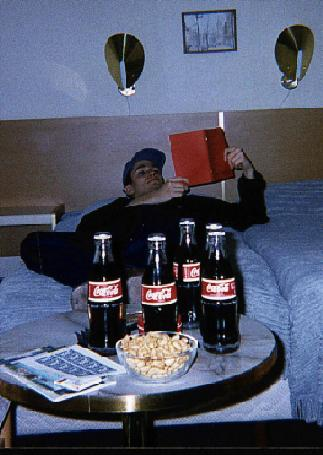
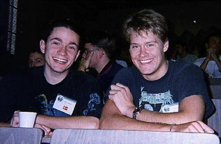
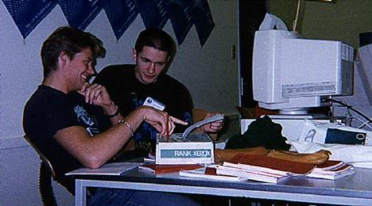

daimiposten er internt meddelelsesorgan for studerende og medarbejdere ved Datalogisk Afdeling, Aarhus Universitet. Indlæggene er ikke udtryk for afdelingens officielle holdning.
I begyndelsen af november afholdt Daimi den lokale kvartfinale i en international konkurrence i programmering. Vinderholdet, Hans Dat, Gustaw W og Mikkel®, gik videre til den nordeuropæiske semifinale i Delft.
Af Mikkel Ricky
Til kvartfinalen på Daimi iklædte vi os de ifølge Jyllands Posten obligatoriske heavy-metal-t-shirts. Således var C-holdet, som vi kaldte os, klar til kamp. Under den indledende briefing havde vi mulighed for at kigge konkurrenterne fra de fire andre hold lidt ud, og det viste sig, at de ikke var helt ubekendte med programmering i C, så vi satte ikke vores forventninger specielt højt. Hvis vi ikke kunne vinde, så kunne vi vel i det mindste få en gratis kop kaffe under konkurrencen, og som man siger: »Det gælder ikke om at vinde, det gælder om at være med!«
Da konkurrencen startede, blev vi lukket ind i robotrummet og fik udleveret et opgavesæt, som vi ivrigt kastede os over og forsøgte at løse. Vi fik hurtigt et par algoritmer på plads, og de skulle så »bare« kodes i C, hvorefter den hellige grav var velforvaret. Det første program begyndte i løbet et stykke tid at virke ganske fornuftigt og give rigtige svar på vores testdata, hvorfor vi sendte det til bedømmelse og gik i gang med næste opgave.

Hans varmer op til konkurrence ved intense studier af »C for Trine-programmører« og intagelse af Coca Cola og øl-nødder.
Efter et par minutter kom der svar tilbage fra dommeren: »Programmet var oversat til en forkert arkitektur, men er godkendt«. Denne oplysning kunne sætte fut under kedlerne, og for at fejre det første point blev der straks sendt en mand i kantinen efter frikadeller og cola. Da vi havde spist den dejlige mad, kom Ole Caprani forbi og gav nogle plastic-kopper kaffe, hvilket hævede moralen adskillige grader.
Mætte og veltilfredse gik vi i gang med næste problem, og efter endnu et par timer eller to havde vi fået endnu et point, og jublen i lokalet ville ingen ende tage. Vi havde nu fået blod på tanden og ihukom det gamle ord: »Det gælder ikke om at være med, det gælder om at vinde!«.
De to første opgaver havde vi løst uden brug af pointere, men i den tredje skulle vi havde dem på banen, og det er ikke altid lige nemt i C. Da der var omkring en halv time tilbage af konkurrencen, sad vi alle tre og gloede apatisk ind i skærmen og forsøgte at finde ud af, hvorfor vores elendige program tilsyneladende ikke havde tænkt sig at terminere. I det samme kom én fra et andet hold flagrende forbi ude på gangen, og han meddelte os, at der var krise i deres gruppe. Da han forsvandt igen, blev vi enige om, at deres krise nok bestod i, at de ikke kunne få godkendt deres femte opgave.
»Klokken er fire! Vær venlig at indstille al programmering og gå op i Datalogisk Fredagscafe!« sagde dommeren. Det gjorde vi så selvom vores tredje program endnu ikke var termineret. På vej hen til cafeen følte vi os pavestolte over vores to point og syntes, at det havde været meget sjovt at være med.
Efterhånden som de andre hold dukkede op i cafeen blev vi dog en smule nervøse, idet de andre hold heller ikke havde fået flere end to points. Der var derfor en lille chance for, at vi ville vinde hvilket bestemt ikke havde været vores plan. Efter at Mogens Nielsen og Michael I. Schwartzbach havde vævet lidt frem og tilbage, kom så det endelige resultat: »Vinderen af konkurrencen med to point er... C-holdet!«
»!?« tænkte vi, men det lykkedes os at træde frem og få overrakt de til lejligheden udformede og laminerede diplomer. Resten af dagen svævede vi rundt på tre lyserøde skyer.
Som vindere af Daimis konkurrence skulle vi til Holland for at deltage i den nordeuropæiske semifinale.
Vi blev således udstyret med en stak togbilletter og en hotelreservation og drog fredag d. 21. november 1997 afsted fra Århus mod Delft.
Efter planen skulle turen derned tage 11 timer, og det gjorde den også. Så rigeligt! Der var nemlig en tysker, der pludselig valgte at køre sin lastbil ind i en tysk bro, hvorved broen blev så forbavset at den valgte at skvatte sammen. I denne anledning udbrød der stor panik og forvirring på Hamburger Bahnhof, og vi blev gennet rundt mellem flere forskellige tog, alt imens et par tyskere simultant forsøgte at oplyse os om tingenes tilstand over banegårdens (halvdårlige) højttaleranlæg. »Krgzzzie Ich wiederhole HGFj//#66!«, messede de, og hverken de lokale indfødte eller vi forstod, hvad der foregik. Efter lidt yderligere undren og moslen rundt blev følgende besked sendt ud over anlægget: »Bitte einsetzen oder Sie werden geschossen!«, og denne besked forstod alle!
Herefter gik alt som planlagt, dog blev ruten lagt om et par gange eller tre, så vores billetter havde samme gyldighed som en brugt busbillet, og Deutsche Bahn satte støt tid til time for time.
Efterhånden som tiden gik, tog sulten eksponentielt til i styrke, og på et tidspunkt blev Mikkel så desperat, at han måtte nedsvælge et stykke spegepølse, som Gustaw havde medbragt, hvorefter et stykke pølse, der hed fri-kadelle drog samme vej. Hans og Gustaw satte et par mærkelige ansigter op i anledning af denne (unormale) indtagelse af skumle næringsmidler. Senere måtte de dog erfare, at det i Holland er meget normalt at spise spegepølse til sit øl, og på utallige snack-barer indtages pølser, der hedder frikadelle.
Klokken 11 ankom vi endelig til Delft, fandt vores kort frem og forsøgte at navigere hen til vores hotel, hvilket lykkedes ved en simpel, men ikke videre effektiv, dybde-først gennemgang af Delfts gader og stræder.

Hans og Gustav i højt humør.
Efter en nats søvn og et solidt morgenmåltid var vi klare til lørdagens program, som var tilrettelagt af de lokale arrangører af den nordeuropæiske semifinale. Før og under turen til Delft havde vi snakket om, hvor spændende det ville blive at møde et repræsentativt udsnit af nordeuropas største nørder, men inderst inde håbede vi alle, at deltagerne var lige så normale og velfungerende som os.
Det var de ikke.
Allerede da vi mødte op til indskrivningen traf vi en nordmand, og en frygtelig sandhed gik op for os: Vi havde glemt at få vores eget specielle tastatur med! Vi slog koldt vand i blodet og besluttede at forsøge os med et af de lokale tastaturer, idet vi vidste, at der senere på dagen skulle holdes en prøvekørsel af systemet, så vi kunne vænne os til et fremmed tastatur. Vi fik også udleveret godteposer fra IBM, så vi havde lidt at trøste os på.
Efter dette indledende chock kylede vi et par kopper kaffe og noget chokoladekage i svælget, og tog plads i det store auditorium. Lidt efter lidt blev hele rummet fyldt med nørder, den ene værre end den anden ...
Den lokale konkurrence-direktør og en amerikansk cowboy indledte med at byde os velkommen, og nørderne mistede hurtigt koncentrationen, og enkelte tog resolut Algorithms frem og studerede denne intensivt. Under resten af velkomsten larmede nørderne som en flok umodne drengerøve, mens vi tre krummede tæer. Efter velkomsten blev en stakkels IBM-mand stablet på scenen og han indledte med at koble sin bærbare pc til en projektor og afsløre at han brugte Windows 95. »Buuh!« mumlede en håndfuld nørder, der uforvarende var kommet til at koncentrere sig om velkomsten. Den rare IBM-mand gik i gang med sin præsentation, som drejede sig om sikkerhed og mangel på samme i forbindelse med handel på og over internettet, hvilket i sig selv var meget interessant, men det var svært at høre noget i de larmende omgivelser.
Pludselig udbrød der vild jubel på tilskuerpladserne: IBM-mandens pc var gået i baglås og måtte genstartes. »Ha, ha! MicroSoft!«, hånede masserne og jublen steg adskellige grade, hver gang der dukkede noget nyt op på skærmen - jublen var på sit højeste, da den stakkels mand måtte taste sit password ind. Efter dette bøvl kom præsentationen rigtigt i gang.
Efter frokost var der flere foredrag og en testsession, hvor vi skulle prøve en masse snedige programmer, der var blevet skrevet i forbindelse med konkurrencen. Vi fik aldrig rigtigt prøvet disse programmer, fordi vi sad og legede med nogle pointere, der åbenbart pegede et alvorligt forkert sted hen.

Den første mock-up studeres grundigt.
Om aftenen var der middag på IBMs regning, og de gav også et par små fadøl, hvilket vi godt kunne lide. Bagefter sluttede vi af med nogle større fadøl på en lokal cafe, og så gik vi hjem til hotellet for at få noget søvn og varme op til morgendagens konkurrence.
Så oprandt endeligt dagen, hvor selve konkurrencen skulle finde sted! Konkurrencen skulle starte kl. 11, og kl. 10 måtte man lægge sine bøger og lignende ind i computerrummene, men det var under dødsstraf forbudt at røre ved selve maskinerne. Adskellige af holdende slæbte store mængder af tykke, farvestrålende bøger ind i lokalerne og stablede dem op rundt omkring deres computer. Vi ville naturligvis ikke stå tilbage for dette opbud af bøger, så vi stablede samtlige vores medbragte Dat1/dADS-noter op i en fin bunke, som dog ikke synede af meget sammenholdt med de andres bogtårne.
Der blev nu ringet til samling i auditoriet, og efter en kort seance med uddybende oplysninger om konkurrencen var alt klart til det store slag. Folk fordelte sig ved deres respektive computere, og stirrede forventningsfuldt på konvolutten under tastaturet.
Skærmen meddelte med en fin rulletekst, at konkurrencen endnu ikke var gået igang.
Lige pludselig tonede et login-vindue frem på skærmen, og konkurrencen var startet. Konvolutterne blev flået op, og indholdet af opgaver blev studeret grundigt, så man kunne finde ud af, hvor man skulle starte og slutte. I løbet af ganske få minutter havde vi lavet den første mock-up, og Hans satte sig til tastaturet for at beregne den længste strengt voksende delfølge i en vektor af heltal. Belært af erfaringerne fra Daimis kvartfinale, blev der straks erklæret en række heltalsvariable: int i, j, k, l, m, n; og der blev så fyldt ud med noget kode hist og herm, indtil et komplet C-program var samlet. Efter to forsøg, hvoraf det første skrev resultatet af programmet ud på skærmen i stedet for til en fil, havde vi fået den første opgave godkendt, og vi fik udleveret en ballon i passende farve.
Humøret var nu steget adskellige grader, og Mikkel satte sig optimistisk til tastaturet for at afgøre, om en graf var stærkt sammenhængende (se Grafalgoritmer og Algoritmisk Problemløsningsteknisk, Daimi fn 59, side 33). Selve problemet er ikke svært at løse, men at få input læst ind i programmet viste sig at blive noget af en hovedpine. Efter lidt moslen frem og tilbage med nogle pointere, syntes programmet at fungere, men som lyn fra en klar himmel stoppede det bravt og vi fik meddelse om at der var en fejl på bussen. »Elendig hard-ware«, tænkte vi i munden på hinanden, og Gustaw fremdrog pr. instinkt en loddekolbe, mens Hans pillede kabinettet af maskinen. »You are not alloved to modify se hardvare!«, moraliserede en af de tilsynsførende på gebrokkent engelsk og skuffede måtte vi sætte kabinettet på igen og granske C-koden. Et par pointere blev flyttet en smule, og et par ekstra heltalsvariabler erklæret, hvorefter programmet igen var oppe at køre og det blev derfor straks sendt til juryen, så vi kunne få endnu en ballon. Det fik vi ikke vi fik en core-dump.
Tiden gik støt og roligt, konkurrencens afslutning nærmede sig, men vi havde stadig kun to balloner. »Hvis vi ikke kan få deres balloner, så kan vi da spise deres kiks og boller!« tænkte vi, og det gjorde vi så.
Klokken fire sluttede konkurencen, og alle deltagere samledes i auditoriet for at overvære sejrsceremonien. Nogle af os deltog dog kun i ceremonien ved at se på fra tilskuerpladserne. Førstepladsen gik til et svensk hold fra Umeå, som havde fået løst 6 opgaver og en flok tyskere besatte andenpladsen. Disse to hold bliver i februar sendt til Atlanta for at deltage i den internationale finale. Vi endte på en flot 27. plads, hvilket vi var godt tilfredse med, idet der var 41 hold med i konkurencen.
Efter sejrsceremonien var der gratis fadøl i studenterbaren, og her slog det danske hold for alvor til. Vi er måske ikke så gode til C, men vi er gode til at drikke øl. Det var også her at Hans og Gustaw lærte at det er meget normalt at spise spegepølse til sit øl.
Efter en kort nats søvn vågnede vi mandag morgen og havde lidt tunge hoveder, men vi skulle nå et tog kl. 8, så der var ikke tid til at have ondt af os selv.
Kun en time forsinkede ankom vi mandag aften til Århus Hovedbanegård, og vi var alle enige om, at vi havde haft en god tur. Selvom vi ikke skal til Atlanta på IBMs regning.
Resultater, billeder og andet godt fra semifinalen i Delft.
Sidste ændring: mandag d. 29. december 1997.